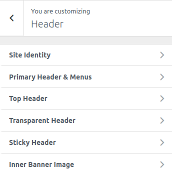
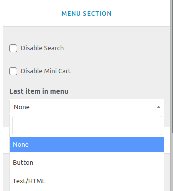

To work on this option, go to Catmandu Pro -> Theme Customizer
Header options allows you to override header layout of the theme.

Site Identity
This section is pretty basic, you can change logo of site from here. Decide to show Site title, tagline or hide them and much more
- Logo - Manage your site logo.
- Site Title: - Manage your site title.
- Tagline: - Manage your site tagline.

- Site Logo Width & Site Titles - Manage logo width; enable/disable title and tagline; manage typography of title and tagline
- Site Favicon - Site Icons are what you see in browser tabs, bookmark bars, and within the WordPress mobile apps. Upload one here! Site Icons should be square and at least 512 × 512 pixels.
Primary Header & Menus
- Disable Menu - Check to disable primary menu.
-
Header Layout:
-
Manage the menu design whether to do
Left Logo | Right MenuorRight Logo | Left MenuorCenter LogoThis will not work onHeader 2 -
Manage header layout design selecting from
Header 1orHeader 2
-

- Menu Section
- Check to disable search on menu
- Check to disable mini cart on menu
- Select what to display as the last item on the menu either
noneorButtonorText/HTML

- Menu Colors : Change menu color, hover color and active menu color
- Sub menu Colors : Change color, hover color and active color of sub menu items
- Mobile menu & colors : Change background color, link color and hamburger menu color
Top Header
You can control content and color of Top Header from this setting
- Enable Top Header ? - Toggle to enable the top header
- Quick contact: - Add quick contant info using repeater provided. You can put title, contact and icon for the contact.
- Social connects: - Add the social media links. The theme will automatically assign the icon as per the link.

- Background & Colors - Change the background color, text color and icon color

Transparent Header
This section allows you globally enable/disable transparent headers. Show in all pages or just one ?
- Enable Transparent Header Globally ( Disabled by default )
- Disable on Blog/Posts page only
- Disable on serach pages only
- Disable on archive page only
- Disable on single page only
- Disable on single post only
- Disable on all single post/pages only
- Disable on 404 pages
- Transparent Background Color Control, Border and Colors

Sticky Header
- Enable Sticky Header ? - Toggle to enable the stikcy header
- Sticky Background color - Manage the background color of the menu when it is sticky.

Inner Banner Image
This section is affected in inner pages of site. This section will be show below the header. You can either choose a color or image to show.
- Enable or Disable
- Banner height
- Background Image or Background Color
- Choose Background Repeat, position, size, scroll or fixed image, background overlay color
- Show page title
- Page title typography